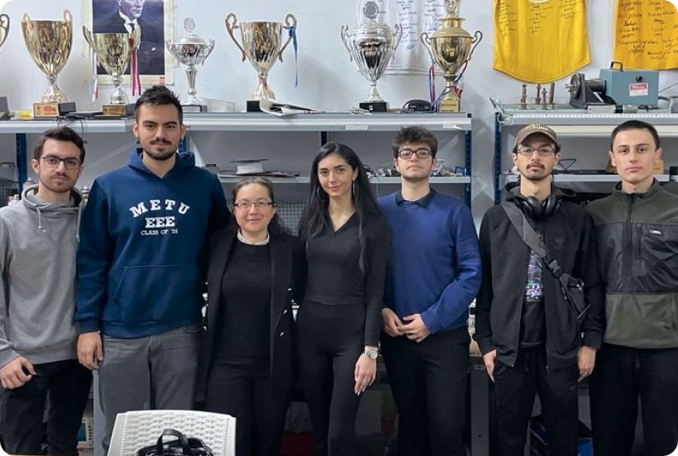
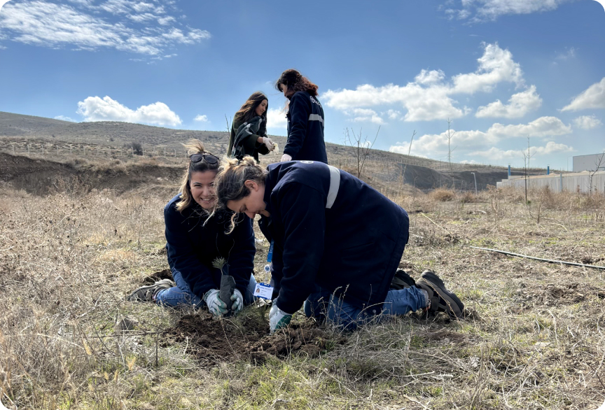

Mitaş Endüstri olarak, tüm çalışanlarımızın ortak katılımlarıyla toplumu geliştirmeye yönelik, toplumsal sorunlara çözüm üreten proje ve organizasyonlar gerçekleştirmeyi hedefliyoruz.
Hayata geçirdiğimiz tüm sosyal sorumluluk projelerimizde demokrasinin, insan haklarının ve çevrenin korunmasına yönelik öncü rol almaya özen gösteriyoruz. Kadının toplumdaki rolünü güçlendirmek adına kadınları destekleyen politikalar yürütüyoruz.
Çalışanlarımızı, sosyal sorumluluk bilinciyle yer alacakları uygun sosyal faaliyetlere gönüllü olmaları konusunda destekliyoruz. Afet, acil yardım, eğitim ihtiyaçları gibi konularda tüm Mitaş Ailesi olarak yardım eli uzatmak için bir araya gelmekteyiz. Yasal yükümlülüklerin ötesinde, en iyi çevresel çözümleri uygulamak ve çevre bilincini artıracak her türlü girişime destek sağlamak, genç yeteneklere, öğrencilere, milli sporculara destek veren ve teşvik eden faaliyetler içinde bulunmak önceliğimizdir.